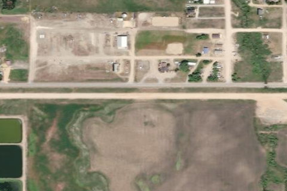

FAIRFIELD/FROSTENSON AIRFIELD
U86 · ID

Aerial imagery source: Esri, Vantor, Earthstar Geographics, and the GIS User Community
| Identifier | U86 |
|---|---|
| State | ID |
| Runway length | 2,950 ft |
| Runway width | 40 ft |
| Surface | DIRT |
| Runway | 08/26 |
| Elevation | 5,058 ft |
| Ownership | public |
| CTAF | 122.9 |
| Coordinates | 43.34186111, -114.79827777 |
Notes
[idaho_itd] County Airfield [shortfield] Location Overview Camas County Airport, also known as Fairfield/Frostenson Airfield, sits at the edge of Fairfield, the county seat of sparsely populated Camas County in south-central Idaho. The strip lies at roughly 5,058 feet elevation on the open, wind-swept Camas Prairie, a broad agricultural valley framed by the Soldier Mountains to the north and the Bennett Hills to the south. It's a public-use, publicly owned field managed by Camas County, with no control tower and no on-field fuel or FBO services, reflecting the rural, ranching character of the surrounding area. Camping & Recreation There are no developed camping facilities directly on the airfield, but Fairfield itself offers motels and services within walking distance of the strip, and the surrounding region is a recreation hub. Soldier Mountain Ski Area is a short drive north for skiing, snowmobiling, and mountain biking, while the Camas Prairie Centennial Marsh Wildlife Management Area draws birdwatchers, and Magic Reservoir and local ponds and streams offer fishing, boating, and informal camping. The area is also popular for hiking, hunting, and horseback riding, particularly in late spring when the prairie blooms with camas lilies. Notes & Warnings The single runway, 8/26, is a 2,950-by-40-foot dirt strip in good condition, with a right-hand traffic pattern for Runway 8 and left-hand for Runway 26. Pilots should watch for obstructions near both runway ends, including roads within 15 feet of the surface, a 40-foot pole near the Runway 26 end, and a power line near Runway 8. Winter maintenance is irregular, so runway condition should be confirmed with the airport manager before use in snow season. There's no fuel, no instrument approach procedures, and the CTAF is 122.9; the field lies within Salt Lake Center's airspace, and pilots can contact Salt Lake ARTCC for clearance delivery if needed. History The airfield was activated in August 1946, making it a long-standing fixture of aviation in this remote stretch of south-central Idaho. Camas County itself was carved out of Blaine County in 1917 and named for the camas root, a lily-like plant with an edible bulb that Native Americans and early settlers relied on as a food source, and whose spring blooms still color the prairie each year. As one of Idaho's classic backcountry-adjacent strips, U86 has long served the ranching community around Fairfield and remains part of the broader network of small public airstrips that define recreational and rural flying in Idaho.